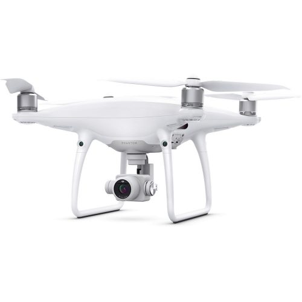
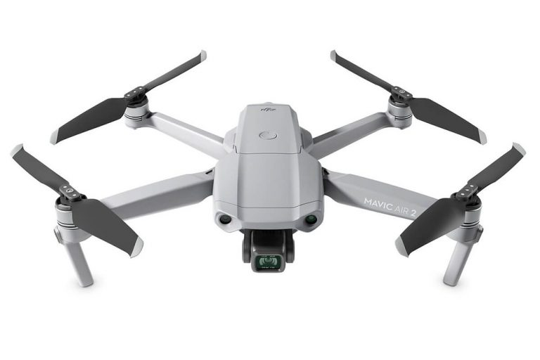

Drones agrículas .
-

Phantom 4 Pro V.2
Saiba mais + -

DJI Mavic Air 2
Saiba mais + -

Drone Pelicano
Saiba mais +

Embora a tecnologia seja muitas vezes associada ao ambiente urbano, o campo tem se beneficiado enormemente da inovação. Tecnologias como drones para monitoramento de plantações, sistemas de irrigação inteligente e softwares de gestão de colheitas têm ajudado os produtores rurais a aumentar a eficiência e a sustentabilidade. Ao mesmo tempo, esses avanços estão chegando à cidade, influenciando a maneira como a produção de alimentos e recursos naturais é gerida. Este tema poderia explorar como as tecnologias desenvolvidas no campo podem ser aplicadas na cidade, mostrando que inovação e tradição podem caminhar lado a lado para um futuro mais inteligente e sustentável.
É fato que o uso de drones na agricultura é uma realidade que transformou a vida de produtores e profissionais da área. Com as informações obtidas a partir do monitoramento com o dispositivo, é possível tomar decisões baseadas em fatos, otimizando os resultados. Muitos dos veículos aéreos não tripulados são equipados com sensores dos mais variados tipos e softwares de última geração, que fornecem dados detalhados e precisos sobre culturas agrícolas, florestas e pecuária.
Como principais benefícios dos drones na atividade agrícola, podemos citar:
🌾 Imagens detalhadas e precisas;
🌾 Flexibilidade para obtenção das imagens;
🌾 Baixo custo, dependendo da tecnologia empregada;
🌾 Cobertura em áreas pouco acessíveis;
🌾 Cobertura de grandes áreas em um pequeno intervalo de tempo;
🌾 Facilidade no monitoramento;
🌾 Economia de insumos;
🌾 Softwares inteligentes capazes de identificar diferentes situações.
As vantagensGabriela Fernanda Wutke e Emmily Caroline MartimFiz este site sobre a tecnologia voltada a utilização de Drones em nossa agricultura. Com esse projeto Agrinho aprendi coisas sobre essa grande tecnologia e a importância do Paraná para a agricultura. Gostei muito em desenvolver este projeto, também aprendi muitas tags HTML e sobre vários códigos CSS, tive um grande suporte da professora Carla Kuhn Graunke do Colégio Estadual-Leonilda Papen, obrigado professor por conseguir um tempinho para auxiliar e conseguir terminar com êxito este projeto.